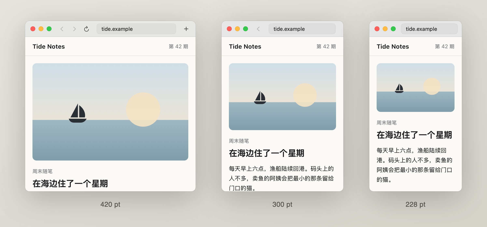

缩到多窄都能用
越窄按钮越少，最窄时只剩地址栏。

自己的一套登录和数据
在 MiniBrowser 里登录的账号和 Cookie 只属于它自己，和你每天用的浏览器互不影响。
安装
需要 macOS 13 或更新版本。
用 Homebrew
brew install --cask zhiyozhao/tap/minibrowser装好后直接打开，不会出现“无法验证开发者”的提示。
手动安装
- 下载 MiniBrowser 的 DMG。
- 打开 DMG，把 MiniBrowser 拖进“应用程序”。
- 第一次打开时如果提示“无法验证开发者”，先关掉提示，到“系统设置 → 隐私与安全性”，在页面底部点“仍要打开”。